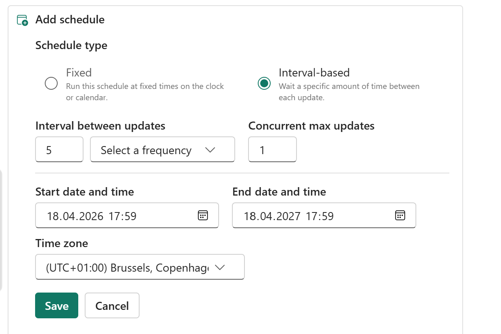
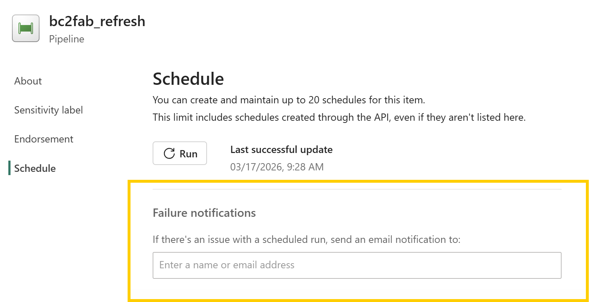

Resources
FAQ
Answers to common questions about operating and extending your BC2Fab deployment.
Contents
- How is the data synchronizing working?
- How to size the Fabric Capacity for the mirroring?
- What licenses do I need to run BC2Fab?
- How to get the number of licensed BC users for the BC2Fab subscription offer?
- How to test BC2Fab?
- How close to real-time will the data be available in Fabric?
- How do I change the refresh time and schedule?
- How do I build Power BI reports on top of the mirrored data?
- How can I see how up to date the data is?
- How can I see the number of rows per table (and per table and company) in my mirrored database?
- How are tables and fields named in BC2Fab?
- How can I use my own endpoints for mirroring?
- How can I extend or change the mirrored data after the initial load?
- Does BC2Fab keep historical schema versions or track schema drift?
- Should I limit the columns in my Custom Queries?
- How can I extend the mirrored data with other data sources?
- How do the bronze, silver, and gold layers work?
- How are deleted records handled with incremental loading?
- How do I get notified about load failures?
- How does the loading impact Business Central?
- How is the access to Business Central working?
- Does BC2Fab support Business Central On-Premise versions?
- How to use BC2Fab with multiple BC environments?
- What needs to be considered when pausing/resuming the Fabric capacity?
- How to connect with Excel to the mirrored database?
- Why does the workload need delegated permissions?
- What support and service levels are available?
How is the data synchronizing working?
- BC2Fab uses Business Central APIs to extract data from Business Central, i.e. it is pulling instead of pushing data.
-
All queries provided by BC2Fab and generated by the BC2Fab query generator include the hint
DataAccessIntent = ReadOnlyso data is pulled from the read-only replica. Read-only replicas are available for all production environments. See the DataAccessIntent property for more details. - Various performance patterns were used to maximize loading performance, including those described in the Business Central performance guidance.
How to size the Fabric Capacity for the mirroring?
Based on our internal benchmarks and information from clients, BC2Fab is approximately 5 to 10 times more CU-efficient than standard Gen2 Dataflows.
The default usage of incremental refresh minimizes the computational load. For most scenarios aiming for near-real-time synchronization (refresh intervals between 5 to 15 minutes), a Fabric F2 capacity will likely be sufficient for the mirroring process.
Our Recommendation:
- Start with an F2 Capacity: Configure your desired refresh frequency (e.g., every 15 minutes) on an F2 SKU.
- Monitor: Use the Fabric Capacity Metrics app to observe consumption and adjust the capacity if necessary
This estimation applies strictly to the mirroring/ingestion process handled by BC2Fab. Any additional workloads—such as heavy SQL transformations, Notebooks, or Power BI reporting running on top of the mirrored data—consume their own Capacity Units and must be factored into your total sizing calculation separately.
What licenses do I need to run BC2Fab?
BC2Fab requires a license for the BC2Fab solution, an active Fabric or Fabric Trial Capacity (F2 or larger), and at least one Power BI Pro or Premium Per User account to manage and share the workspace assets.
How to get the number of licensed BC users for the BC2Fab subscription offer?
The BC2Fab subscription is priced based on the number of assigned Dynamics 365 Business Central Premium and Dynamics 365 Business Central Essentials licenses in your tenant. Use the Microsoft 365 Admin Center to look up the current count.
- Open the Microsoft 365 Admin Center (
admin.microsoft.com) and sign in with a global or billing administrator account. - In the left-hand navigation, go to Billing > Licenses.
- In the product list, locate Dynamics 365 Business Central Premium and Dynamics 365 Business Central Essentials.
- Read the Assigned licenses column for each product (e.g. 47/47 means 47 assigned licenses).
- Add the assigned counts of both products together — that total is the number of licensed BC users relevant for your BC2Fab subscription tier.
How to test BC2Fab?
- Install the BC2Fab workload.
- The trial will be activated automatically for 30 days.
- The trial includes all premium features.
How close to real-time will the data be available in Fabric?
It depends mainly on your refresh frequency and the mirroring ingestion time.
- With BC2Fab Premium licenses, you can schedule refreshes at high frequency (for example, every 2 or 3 minutes) due to the incremental load that will only load new and changed data. See the section: How do I change the refresh….
- This incremental load from Business Central typically runs in ~1 minute.
- The mirroring replication (landing zone → OneLake/Delta) typically takes less than 2 minutes, assuming the Fabric capacity is not throttling/overloaded. (Microsoft Learn)
Microsoft doesn't guarantee a specific mirroring replication delay. They describe mirroring as near real-time and list factors that influence latency. (Microsoft Learn)
In practice, the duration of these steps typically translates to an end-to-end delay from data entry in Business Central to report availability of 5 to 15 minutes for most setups - assuming the reports are using Direct Lake Mode to directly reflect the changed data.
How do I change the refresh time and schedule?
The BC2Fab workload deploys a Fabric pipeline named bc2fab_refresh that orchestrates loads from Business Central into the mirrored database. Scheduling is controlled on that pipeline.
- In Microsoft Fabric, open the workspace that hosts the BC2Fab workload.
- Select the
bc2fab_refreshpipeline and choose Schedule from the command bar. - Adjust the frequency, start time, end time, or deactivate the schedule. For more details, see Scheduled pipeline runs in Fabric.

You can also trigger an on-demand load by selecting Run now on the pipeline whenever you need an immediate refresh.
How do I build Power BI reports on top of the mirrored data?
The mirrored bc2fab_mirror database supports building semantic models in Import or Direct Lake mode. When using Direct Lake, reports stay synchronized without maintaining dataset refreshes.
Direct Lake Mode
- Open the Fabric workspace and launch the
bc2fab_mirrordatabase to review the synchronized Business Central tables. - From the mirroring experience, choose New > Semantic model, provide a name and select the workspace where the semantic model should be created. Select the mirrored tables that should be part of the semantic model.
- Use the web authoring experience to build relationships, DAX measures etc. Changes to the model will automatically be saved to the model in the service.
- Build Power BI reports in the service or connect with Power BI Desktop to the Direct Lake Semantic Model.
Import Mode
- Open Power BI Desktop.
- Select Get data > OneLake catalog.
- Select the
bc2fab_mirrordatabase in the workspace that was used for mirroring, then choose Connect. - Select the tables that should be loaded.
For more details on creating semantic models in Import or DirectQuery storage modes, see this Microsoft Learn article.
How can I see how up to date the data is?
Use Fabric monitoring tools for transparency of the loading process.
- The overview on the mirroring database
bc2fab_mirrorshows the last completed mirroring time for every table so you can see when each dataset finished syncing. - All mirrored tables expose a
Modified at BC2FABcolumn that records when each row was last retrieved from Business Central.
Surface those timestamps through T-SQL queries or Power BI reports to get transparency into the freshness of data.
How can I see the number of rows per table (and per table and company) in my mirrored database?
Open the SQL endpoint of the mirroring database (normally called bc2fab_mirror) and run one of the queries below. The SQL query editor is described in this Microsoft Learn article.
DECLARE @Schema sysname = N'bc';
DECLARE @Sql nvarchar(max) = NULL;
SELECT
@Sql = COALESCE(@Sql + N' UNION ALL ', N'')
+ N'SELECT '
+ QUOTENAME(s.name + N'.' + t.name, '''') + N' AS [table_name], '
+ N'COUNT_BIG(1) AS [row_count] '
+ N'FROM ' + QUOTENAME(s.name) + N'.' + QUOTENAME(t.name)
FROM sys.tables t
JOIN sys.schemas s ON s.schema_id = t.schema_id
WHERE s.name = @Schema
ORDER BY t.name;
IF @Sql IS NULL
BEGIN
-- No tables found in that schema
SELECT CAST(NULL AS nvarchar(256)) AS [table_name], CAST(0 AS bigint) AS [row_count]
WHERE 1 = 0;
END
ELSE
BEGIN
EXEC sys.sp_executesql @Sql;
ENDDECLARE @Schema sysname = N'bc';
DECLARE @Sql nvarchar(max) = NULL;
;WITH Tbl AS (
SELECT
s.name AS schema_name,
t.name AS table_name,
HasBCCompany = CASE
WHEN EXISTS (
SELECT 1
FROM sys.columns c
WHERE c.object_id = t.object_id
AND c.name = N'BC Company'
) THEN 1 ELSE 0
END
FROM sys.tables t
JOIN sys.schemas s ON s.schema_id = t.schema_id
WHERE s.name = @Schema
)
SELECT
@Sql = COALESCE(@Sql + N' UNION ALL ', N'')
+ CASE WHEN HasBCCompany = 1 THEN
N'SELECT '
+ QUOTENAME(schema_name + N'.' + table_name, '''') + N' AS [table_name], '
+ N'CAST([BC Company] AS nvarchar(250)) AS [BC Company], '
+ N'COUNT_BIG(1) AS [row_count] '
+ N'FROM ' + QUOTENAME(schema_name) + N'.' + QUOTENAME(table_name) + N' '
+ N'GROUP BY [BC Company]'
ELSE
N'SELECT '
+ QUOTENAME(schema_name + N'.' + table_name, '''') + N' AS [table_name], '
+ N'CAST(N'''' AS nvarchar(250)) AS [BC Company], '
+ N'COUNT_BIG(1) AS [row_count] '
+ N'FROM ' + QUOTENAME(schema_name) + N'.' + QUOTENAME(table_name)
END
FROM Tbl
ORDER BY table_name;
IF @Sql IS NULL
BEGIN
-- No tables found in that schema
SELECT
CAST(NULL AS nvarchar(256)) AS [table_name],
CAST(N'' AS nvarchar(250)) AS [BC Company],
CAST(0 AS bigint) AS [row_count]
WHERE 1 = 0;
END
ELSE
BEGIN
EXEC sys.sp_executesql @Sql;
ENDHow are tables and fields named in BC2Fab?
BC2Fab mirrors Business Central with the same table and field names from Business Central, removing only special characters such as ., ,, and / from table names.
Behind the scenes, BC2Fab aligns API queries with the Business Central field list so objects match their Business Central counterparts—this is ensured for the standard BC2Fab objects and for queries generated with the BC2Fab query generator and facilitates subsequent queries on the data.
How can I use my own endpoints for mirroring?
BC2Fab works off Business Central API queries rather than reflecting on the BC schema directly. You therefore define what to mirror by exposing it through an API query — custom API pages are not supported. A query must expose:
- the Business Central change-tracking columns that the incremental load relies on,
- the
$systemIdcolumn, and - fields that follow the required naming convention, which the exact-BC-field-name mirroring depends on (see How are tables and fields named in BC2Fab?).
$systemId column, and the field naming convention — so the mirroring works without manual adjustments. The generator builds AL query objects that you compile and publish to Business Central.Limitation: FlowFields are not fully supported by BC2Fab. FlowFields can slow down loads, and not all FlowField changes are tracked by the incremental load change-tracking mechanism. Instead of exposing FlowFields on mirrored endpoints, expose the underlying fact table and build the calculation in Fabric or Power BI. As a result the BC2Fab query generator does not allow adding FlowFields.
After creating the Queries, endpoints for custom tables need to be added to the BC2Fab table config. Adding a brand-new table is therefore a deliberate config step — but once the query is in the table config, it is automatically picked up by the mirroring mechanism—no changes are required in Fabric.
Follow the instructions how to add custom tables.
If custom fields should be added to an existing standard table for mirroring, the Entity Set Name in the existing BC2Fab table config needs to be replaced by the custom API endpoint. To do so the Assist-Edit of the "Entity Set Name" (... in the field) can be used to select the custom endpoint. The other relevant fields (Publisher, Group, API Version) will be set based on this selection.
How can I extend or change the mirrored data after the initial load?
Adding new tables: If you add new tables in BC2Fab Setup in Business Central, they will be picked up automatically and fetched with the next load.
Removing tables: Existing data in the mirrored database is kept and no new data flows in for the table. Use the Reset button (BC2Fab workload → Tables tab) for the affected table if you want to clear the existing table.
Adding fields: New data is mirrored automatically with the next load. Use the Reset button (BC2Fab workload → Tables tab) for the affected table to backfill the new field for existing rows as well.
Removing fields: When a field is removed from a mirrored endpoint, existing data in the mirrored database is retained, but no new data is transferred for that field on subsequent loads. Use the Reset button (BC2Fab workload → Tables tab) for the affected table to enforce a new full refresh of the table without the removed field.
Does BC2Fab keep historical schema versions or track schema drift?
No. BC2Fab applies schema changes in place via the Reset/reload mechanism described in How can I extend or change the mirrored data after the initial load? — it does not preserve prior schema versions or maintain Slowly Changing Dimension (SCD) style history of the schema itself.
- Each mirrored row carries a
Modified at BC2FABcolumn (see How can I see how up to date the data is?) that records when the row was last retrieved from Business Central, giving you per-row freshness — but this is data freshness, not schema versioning. - If you need to retain previous schema versions, snapshot historical states, or track drift over time, design that into your own silver/gold layer (for example with SCD patterns in a Lakehouse or Warehouse downstream of the
bcschema).
bc schema is intended as a faithful, current-state bronze layer. Historical and point-in-time modeling belongs in the layers you build on top of it — see How do the bronze, silver, and gold layers work?.
Should I limit the columns in my Custom Queries?
No, we recommend including any columns that might be needed for future reporting.
Because BC2Fab is optimized for efficient refreshes (loading only new or changed data), adding extra columns has a minimal impact on compute and storage overhead.
Including these fields upfront ensures that Fabric and Power BI builders can enhance semantic models later without requiring additional changes to the APIs in Business Central.
How can I extend the mirrored data with other data sources?
OneLake lets you combine Business Central data with other sources without copying tables out of Fabric.
For BC2Fab mirrored data, use schema shortcuts as the recommended approach. Schema shortcuts expose the full mirrored schema in a Lakehouse and keep it in sync as new mirrored tables are added over time.
Why schema shortcuts are recommended
- Automatic table onboarding: when BC2Fab starts mirroring a new table into the mirrored database schema, it automatically appears through the schema shortcut without creating additional shortcuts.
- No duplicate storage: shortcuts reference OneLake data in place, so you can model and join data without copying mirrored tables.
- Lower maintenance: you manage one shortcut per schema instead of one shortcut per table.
Prerequisites
- The target Lakehouse must be schema-enabled.
- You need permissions on both the source (mirroring database) and the target Lakehouse.
How to create a schema shortcut
- Open (or create) a schema-enabled Lakehouse that you use for blended analytics. This lakehouse can be part of the same or a different Fabric workspace.
- In the Lakehouse, create a new shortcut and choose the mirrored database schema from
bc2fab_mirroras source. - Save the shortcut and verify that the mirrored tables are visible in the Lakehouse.
- Use Dataflows Gen2, pipelines, or notebooks to combine BC2Fab tables with other data
Microsoft documentation for this pattern: Lakehouse schemas and schema shortcuts.
How do the bronze, silver, and gold layers work?
Everything runs in your own Fabric tenant. BC2Fab provides the bronze layer and (on Premium) a silver layer starting point, and you own and build the layers on top.
- Bronze — provided. BC2Fab lands raw Business Central data into the mirrored
bc2fab_mirrordatabase under thebcschema. This is a faithful, current-state copy of your BC tables (see How are tables and fields named in BC2Fab?). - Silver — provided on Premium as a starting point. The BC Model Accelerator generates the
bc_silverschema: SQL views over the bronze tables with surrogate and relation IDs for every BC table relationship, multi-company by default. Premium also ships out-of-the-box Power BI semantic models and reports. - Gold. Build your business-specific models, aggregations, and any historical/SCD logic (see schema drift) in your own gold layer on top of silver.
Multi-environment ownership
Each BC environment needs its own BC2Fab workspace. Consolidate across environments in a shared silver-layer Lakehouse that you own, using schema shortcuts pointed at each bc2fab_mirror database — see How to use BC2Fab with multiple BC environments? and How can I extend the mirrored data with other data sources?.
How are deleted records handled with incremental loading?
Business Central logs deletions for BC2Fab so incremental loads remove the same rows from the mirrored database.
This targeted logging keeps analytics aligned BC while minimizing data storage and processing overhead.
How do I get notified about load failures?
Monitor pipeline executions in Fabric and trigger notifications when runs fail.
- To monitor the recent runs, open the
bc2fab_refreshpipeline, go to Run history, and review recent executions for status and duration. - To receive email notifications when refreshes fail, open the
bc2fab_refreshpipeline, go to Schedule, and scroll down to the Failure notifications section. Enter the name or email address of the recipient who should receive notifications.

How does the loading impact Business Central?
BC2Fab is designed to avoid affecting transactional performance in Business Central.
- Read-only replica: All data extraction runs against the Business Central read-only replica, so the operational write database remains untouched by analytics workloads.
- Incremental Loading: Each pipeline run processes only the records that changed since the prior refresh by using Business Central
systemRowVersionvalues, keeping load windows short. - API queries only: The integration calls API queries instead of API pages to maximize throughput.
How is the access to Business Central working?
BC2Fab authenticates to Business Central with an Azure AD service principal and stores the credentials securely in Azure Key Vault.
For the installation follow the instructions.
Why does the workload need delegated permissions?
Fabric workloads currently must run actions using delegated permissions. Delegated means the consent process can never grant the BC2Fab app more than the signed-in user already has — the requested permissions reflect exactly what the app needs to automate setup inside the Fabric tenant.
- Extend Fabric with new item types — Mandatory for every custom Fabric workload.
- Read and write all workspaces — Used to create the
bc2fab_internalfolder for organisation. Fabric offers no finer-grained permission scoped to folder creation. - Read and write on all Fabric items — Used to create the solution's items — the
bc2fab_internallakehouse, mirrored database, notebooks and the data pipeline. The actual data flow runs directly between Business Central and the workspace; the workload only installs and manages these components. - Execute on all Fabric items — Used to run the notebooks and pipeline that validate settings and perform the initial load.
- Access Azure Storage — Used to store workload settings (such as environment and company name) inside the
bc2fab_internallakehouse. - Sign you in and read your profile — Every custom Fabric workload must declare at least one Microsoft Graph permission; this is the standard default.
Does BC2Fab support Business Central On-Premise versions?
Currently, BC2Fab does not support Business Central On-Premise versions.
Please tell us about your interest via the contact form.
How to use BC2Fab with multiple BC environments?
Each BC environment requires its own dedicated BC2Fab Fabric workspace. Once the data is landing in Fabric, you can unify it in a silver layer by creating shortcuts or copying tables from each BC2Fab landing zone into a shared Lakehouse.
- One workspace per environment: Install BC2Fab separately for each Business Central environment you want to mirror.
- Silver-layer consolidation: Combine the mirrored data across environments by pointing schema shortcuts from a shared Lakehouse at each
bc2fab_mirrordatabase, or by copying the data using pipelines or notebooks. - Single license key: One BC2Fab license key covers all instances.
Multiple companies within a single BC environment can be synchronized from within one BC2Fab workspace, so a separate workspace is only needed when the environments themselves differ.
What needs to be considered when pausing/resuming the Fabric capacity?
Fabric capacities can be paused and resumed manually or resumed automatically (e.g. via Azure Automation Runbooks) to control costs. The BC2Fab loading process will not run while the capacity is paused.
After resuming the capacity, resume the bc2fab_mirror database to restart mirroring. This can be
done manually in the mirroring experience (see the
Fabric
mirroring troubleshooting guidance) or via API by calling the
Start Mirroring endpoint.
How to connect with Excel to the mirrored database?
You can query BC2Fab mirrored data directly from Excel using the SQL endpoint of the bc2fab_mirror database.
Step 1 — Get the SQL endpoint
- In Microsoft Fabric, open the workspace that contains the
bc2fab_mirrordatabase. - Select the
bc2fab_mirroritem and open it in the mirroring experience. - Switch to the SQL endpoint view (top navigation in the mirroring experience).
- Copy the SQL connection string shown in the toolbar or under Settings. It looks similar to
<workspace>.datawarehouse.fabric.microsoft.com.
Step 2 — Connect from Excel
- Open Excel and go to Data > Get Data > From Database > From SQL Server Database.
- Paste the SQL endpoint copied above into the Server field. Leave the Database field empty or enter
bc2fab_mirror. - Click OK and authenticate with your Microsoft 365 / Entra ID account when prompted.
Step 3 — Select tables
- In the Navigator, expand the
bc2fab_mirrordatabase. - Open the bc schema — this schema contains all mirrored Business Central tables.
- Select the tables you need and click Load (or Transform Data to apply filters in Power Query first).
The data is now available in Excel as a connected table and can be refreshed on demand via Data > Refresh All.
What support and service levels are available?
BC2Fab is largely self-managed: it installs into your own tenant and updates only when you choose — never automatically. Beyond that, the following options are available.
Getting Started package
A fixed-price onboarding package for EUR 2,000. We help you create and deploy your queries, activate the silver layer, and share mirroring best practices.
Premium support
- Normal incidents: 24-hour response time.
- Critical incidents: 12-hour response time.
For onboarding or ongoing support options, get in touch via the contact form.